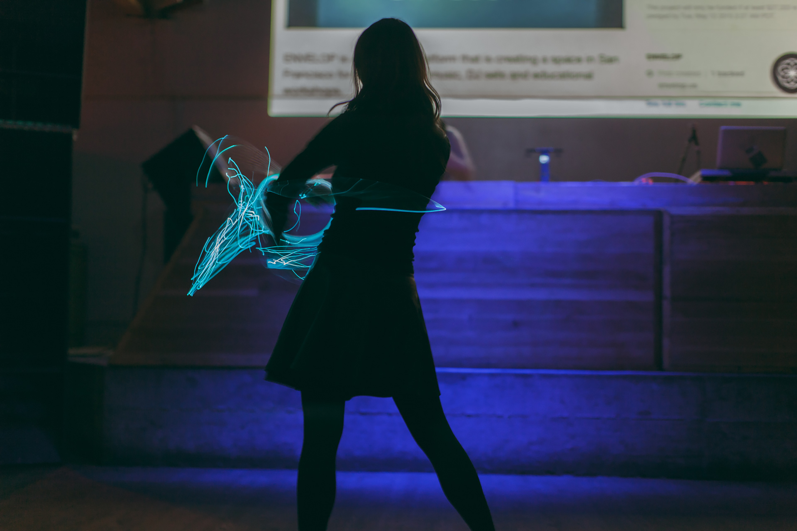

7 Fun Facts about Tabris
1 .
Tabris is from Singapore, a sunny island near the equator in south east Aisa and home of the Crazy Rich Asians. Netflix even made its own reality series called Singapore Social.
But Tabris is not rich, and only slightly crazy.
2 .
Tabris is a huge animal lover. She currently doesn't own any pets of her own, so she enjoys dogsiting for fun on Rover playing with other people's dogs and cats.
She has helped looked after many breeds of dogs, her favorite dog ever is a yellow lab called Brodie.
Google Photos took random photos of my favorite dog I dog sat throughout the year and made a cute little movie aptly titled Doggie Movie üêï pic.twitter.com/vj8xDvnc1h
— Tabris (@tabrischen) January 4, 2019
3 .
Tabris doesn't go to the gym but enjoys long walks in nature.
She once spent a month in Nepal, trekking Annapurna and Everest basecamp back to back.

4 .
Tabris was originally born in Chengdu, China and migrated to Singapore when she was 7.
She is very fond of her hometown and loves visiting for the giant pandas and spicy SzeChuan hotpot.
5 .
Tabris went to college in Australia, studying finance and business informatics at University of Melbourne.
After graduation, she lived in Sydney for 3 years working as a product strategist for Google Australia before moving to the bay area.
6 .
Tabris enjoys many genres of music from indie, pop, classical, world music to electronic dance music (EDM - techhouse and bass).
She started learning violin as an adult and enjoys playing Bach and Brazilian choro on it.
7 .
Tabris is interested in movement and flow arts and regularly practises dancing, yoga, poi spinning and capoeira.
She is currently learning how to hoop.
